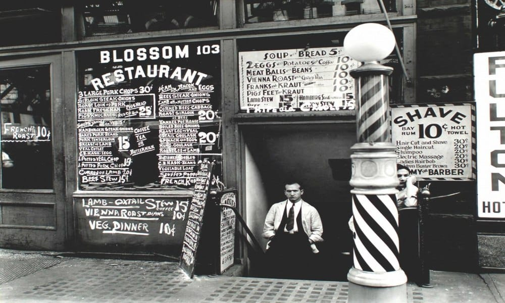

Historia da barbearia
A Dos Sons, localizado em Santa Barbara, California, foi fundado por 05 irmãos, filhos de um imigrante mexicano que serviu o exercito americano que perdeu sua vida durante a guerra contra o Iraque. Os filhos montaram a barbearia em homenagem ao seu pai e especializaram em cortes de cabelo militares ou mais agressivos. A barbearia também é um PUB, onde os motoqueiros locais e passageiros vão para tomar a cerveja mais gelada da cidade, ouvindo um bom e velho rock.
